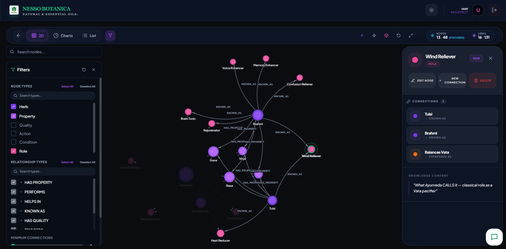
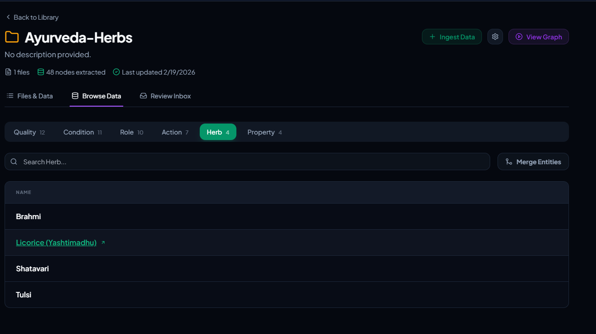

NESSO BOTANICA
Watch Your Ayurvedic Knowledge Map Come Alive
All your herbs, formulations, dosages, and outcomes are already in your documents. We just make them instantly findable.
A Brain for Whatever You Feed It
NESSO BOTANICA is an Ayurvedic intelligence platform — it takes your data, maps every connection inside it, and lets you query all of it in plain English.
It is not a search tool. It does not guess. It does not pull from the internet. It works entirely from what you give it — and reasons through every answer like an expert would.
Every piece of knowledge becomes a node. Every relationship becomes an edge. Together they form a visual 2D and 3D map — where you can see, explore, and navigate your entire knowledge base at a glance.
The more data you feed it, the smarter it gets. Add a new herb, a new biomarker, a new clinical paper — it connects to everything already there, automatically.
The Knowledge Exists. The Problem Is Getting To It.
1. Documents become a living graph
Seeing connections on a graph understands better than reading text. Upload once — every herb, quality, and outcome becomes a node you can see and explore.
2. Trace the path behind every answer
From a symptom to a biomarker to an herb — every node connected, every step visible, every link traceable from root to result.
3. Ask in plain English. Get answers in plain English
No technical queries. No digging. Just ask like you would ask a colleague — and get a clear, reasoned answer instantly.
4. Connections hiding in plain sight
Shatavari and Tulasi may share the same quality, property, or even a minor common trait. The platform surfaces it all — connections you would never find without a map.
5. Clusters you have never seen
Herb groups with shared properties sitting in your data — ready to become your next formulation.
3 Steps. No Setup. No Data Team.
Upload
Drop in any PDF. Classical texts, clinical studies, formulation records. The platform does the rest — reads, understands, and structures everything on its own.
Map
A live knowledge map forms instantly. Every herb, Dosha, quality, and outcome linked. Explore in 2D.
Ask
Ask in plain English. Get a ranked, evidence-backed answer with the full reasoning shown.
Classical dose envelopes are always enforced. Known contraindications are flagged at query time. Every answer shows its reasoning so practitioners can verify before acting.
Learns From What You Give It. Grows With Every Update.
Add anything new — it just connects: New herb tomorrow? New biomarker next week? Just upload it. The platform maps it and connects it to everything already there. No rebuilding. No extra setup.
Not just Ayurveda: Feed it Allopathy or Homeopathy data and it maps that too — then shows you connections across systems. Same intelligence. Any dataset. The platform suggests the connections, but a Domain Expert reviews and approves before anything is published — keeping the knowledge base accurate and trusted.
Two Users. One Platform. Built for Both.
| Domain Expert | End User | |
|---|---|---|
| Who | Researcher, Doctor, Formulation Expert | Clinician, Product Manager, Patient |
| Background | Domain Expert | None required |
| What they do | Build and shape the knowledge base | Ask questions and get answers |
| Key actions | Upload docs, explore the map, trace connections, fill gaps, build formulations, check safety | Ask in plain English, get cited answers, export reports |
| Key benefit | A complete, living knowledge map — graph intelligence and ML running continuously to surface what matters | Fast, clear, reasoned answers |
| Feedback loop | Reviews and resolves unanswered queries | Asks, gets notified when ready |
Real Questions. Real Answers. In Seconds.
Experience the future of Ayurvedic data management. From 3D knowledge graphs to neural AI assistants, NESSO BOTANICA transforms static documents into dynamic, actionable intelligence.
| Domain Expert | End User | |
|---|---|---|
| Sample Query | "Which herbs reduce Pitta and improve gut comfort — and why?" | "Is Ashwagandha safe for me if I have high stress and mild hypertension?" |
| What they get | Shatavari and Licorice — full reasoning path, quality chain, and dosage range | Safety check run — heating Virya flagged, safe dose range and contraindication notes shown |
| Sample Query | "What qualities do the top herbs for menopausal relief share?" | "Which herbs help with sleep and anxiety?" |
| What they get | Common Guna and Virya patterns surfaced — ready for formulation narrative | Top herbs listed with Dosha logic and reasoning shown in plain English |
| Sample Query | "Which herb clusters in our data have the weakest clinical evidence?" | "What is the difference between Shatavari and Tulasi for gut health?" |
| What they get | Every thin evidence node flagged — ready for the next research sprint | Side-by-side comparison of qualities, outcomes, and safety — clearly explained |
It Does Not Just Search. It Thinks.
- Rank what matters most — every herb ranked by how many conditions, Doshas, and outcomes it connects to. Your most critical knowledge, surfaced automatically.
- See hidden clusters — detects which herbs and conditions group together naturally. Formulation opportunities you would never spot manually.
- Spot gaps early — flags weak and disconnected areas in your knowledge base before they become a problem.
- Predict missing connections — surfaces herb-condition links likely to be true but not yet documented. A ready shortlist for your research team.
- Trace any path instantly — find the shortest, most evidence-supported route between any two points in your knowledge map.
Ask Anything. If It Is Not There Yet — It Will Be.
Answer not in the knowledge base? It does not get dropped. It gets flagged to the team, the knowledge base gets updated, and the user is notified the moment their answer is ready.
Every unanswered question makes the platform better. The knowledge base grows to reflect exactly what your team actually needs.
Features avaiable now . Growing Fast.
Live Today
- Automatic document reading and structuring
- 2D and 3D interactive knowledge map
- Plain-English Q&A on your documents
- Dosage envelope recommendations
- Graph intelligence — influence, community detection, gap analysis
- pridiction algorithms
- Classical safety guardrails — always on
Coming Next
- Feedback loop — flag gaps, notify users when ready
- Herb-herb contraindication detection
- Evidence quality tiers — rank links by citation strength
- One-click clinical report generation
- Personalised Dosha programme builder
- 14+ chart types — export as PDF, CSV, or JSON
NESSO BOTANICA In Action


.png)
.png)
.png)
.png)
.png)
Thank You
NESSO BOTANICA — Watch Your Ayurvedic Knowledge Map Come Alive. Ask in plain English. Get answers instantly.